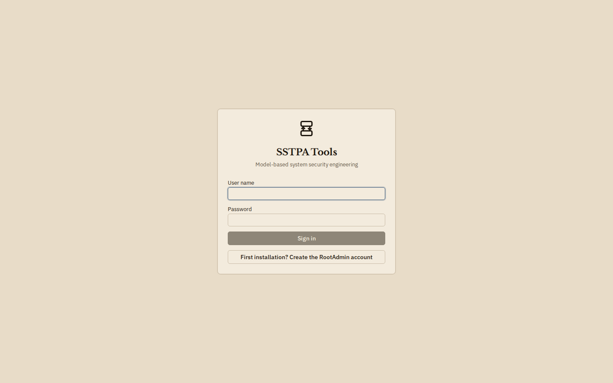
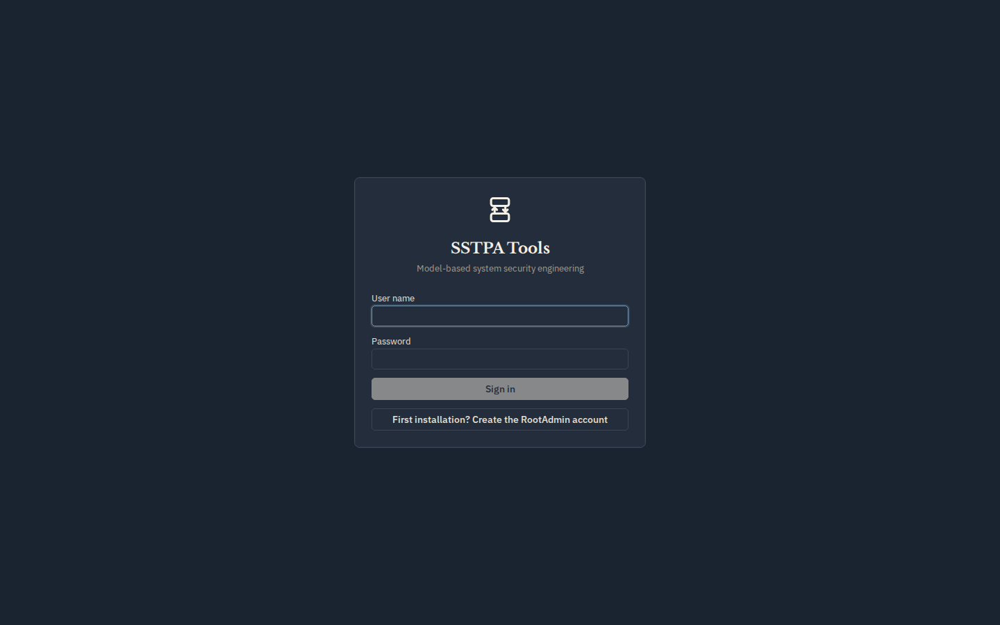
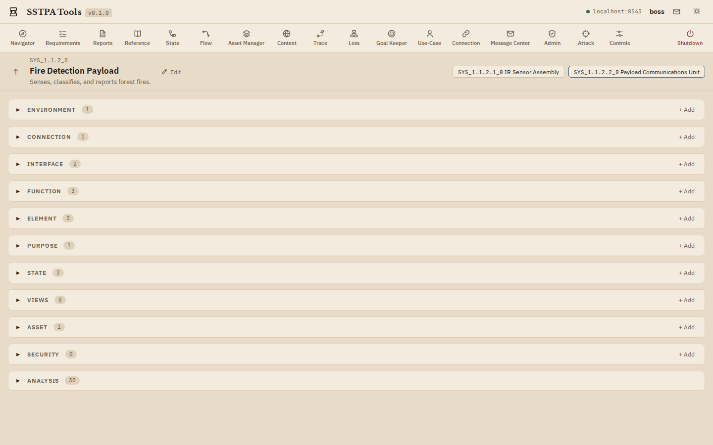
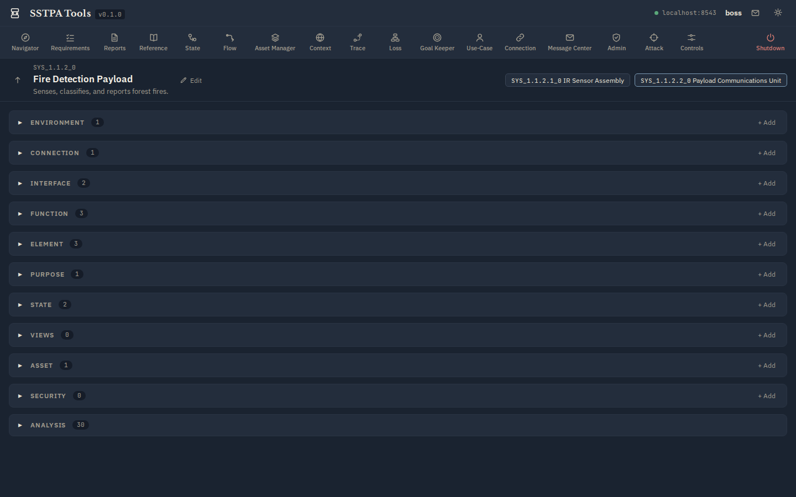
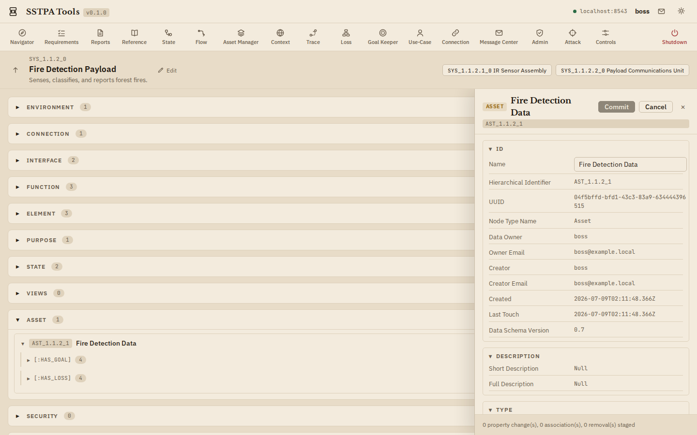
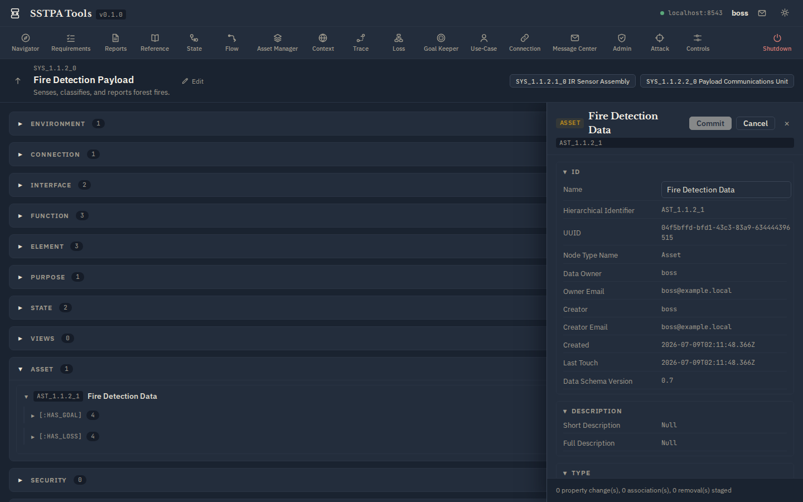

Section 1
Using the SSTPA Tools GUI
The desktop is the home surface for architecture edits and for launching Add-on Tools. Learn the chrome before diving into methodology steps.
Sign in and connected state
Open the GUI, enter your user name and password, and choose Sign in. When the Backend is reachable, the branding bar shows a green status with the backend host. A disconnected status means the GUI cannot call the API (often a TLS trust or URL issue).


Branding bar
Top left: product mark, SSTPA Tools title, and version. Top right: connection status, signed-in user, Message Center shortcut, gear menu, theme affordance, and (on the Control Panel far right) Shutdown.


Control Panel
The horizontal tool ribbon lists Add-on Tools left-to-right. Click a tool to open its window over the Main Panel. The red Shutdown control is separated at the far right. Admin-only tools are hidden from non-admin users.
System of Interest (SoI) panel
Shows the current SoI HID, name, short description, parent navigation, and child System chips. With no SoI selected, the panel prompts you to choose one (Capability children appear as chips). Every SoI-scoped Add-on Tool assumes a current SoI.


Main Panel sections
Progressive disclosure of SoI node types: Environment, Connection, Interface, Function, Element, Purpose, State, Views, Asset, Security, plus Analysis for remaining types. Expand a section to see entity cards; expand a card for relationship groups; use + Add to create; use Edit in Data Drawer to stage property changes.
Data Drawer
Slides in from the right without covering Branding or Control Panel. Fixed identity fields stay read-only; editable properties and associations are staged until you Commit (with confirmation). Cancel discards the staged edit.


Gear menu and Light / Dark
Open the gear for product/license information, Hover help & definitions, and the Style selector:
- Light — default parchment / ivory Technical Art Nouveau Control Room look.
- Dark — bluish-grey nocturne slate for low-light work.
The choice persists per machine. Add-on Tools inherit the active theme.